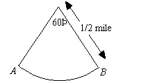

Circular Motion
In this type of
problem, the key is often the arc length formula
S = Rθ,
where
S is the arc length (or distance traveled),
R
is the radius of the circle, and θ
is the angle.
Example:
The figure below shows the path of a car moving around a circular racetrack. How many
miles does the car travel in going from point A to point B
? 
Solution:When
calculating distance, degree measure must be converted to radian measure. To
convert degree measure to radian measure, multiply by the conversion factor
. Multiplying
60° by
yields
60 ×
=
. Now, the length
of arc traveled by the car in moving from point
A to point
B is
S. Plugging this information
into the formula
S = Rθ yields
S =
×
=
.
The
answer is (A).
Example:
If a wheel is spinning
at 1200 revolutions per minute, how many revolutions will it make in t
seconds?
Solution:Since
the question asks for the number of revolutions in
t
seconds, we need to find the number of revolutions per second and multiply that
number by
t. Since the wheel is spinning at 1200 revolutions
per minute and there are 60 seconds in a minute, we get
| 1200 revolutions |
| 60 seconds |
= 20 rev/sec
. Hence, in
t
seconds, the wheel will make 20
t revolutions.
The answer
is (C).